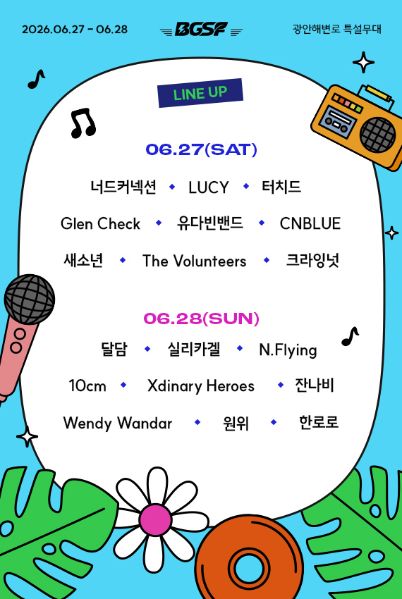
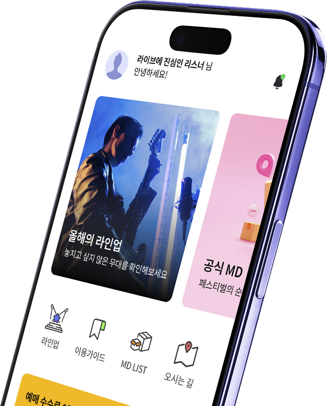

국내외 최정상 밴드부터 주목받는 신예까지, BGSF 2026을 채울 아티스트를 확인하세요.

BGSF 2026에 참여하는 아티스트 명단입니다. 국내외 실력파 밴드와 장르별 대표 뮤지션들이 참여하며, 아티스트가 출연하는 시간과 공연 일정을 확인할 수 있습니다.
MAKE SOUND, NOT WASTE MAKE SOUND, NOT WASTE MAKE SOUND, NOT WASTE MAKE SOUND, NOT WASTE MAKE SOUND, NOT WASTE MAKE SOUND, NOT WASTE
라이브 공연의 에너지를 즐기면서도, 지속 가능한 축제 문화를 선도합니다.
BGSF 2026의 현장에 동참하세요.
P LASTIC IS NOT COOOOL PLASTIC IS NOT COOOOL PLASTIC IS NOT COOOOL PLASTIC IS NOT COOOOL PLASTIC IS NOT COOOOL
페스티벌 현장에서 실행되는 친환경 운영 체계입니다. 관객이 동참할 수 있는 지속 가능한 활동들을 안내합니다.
